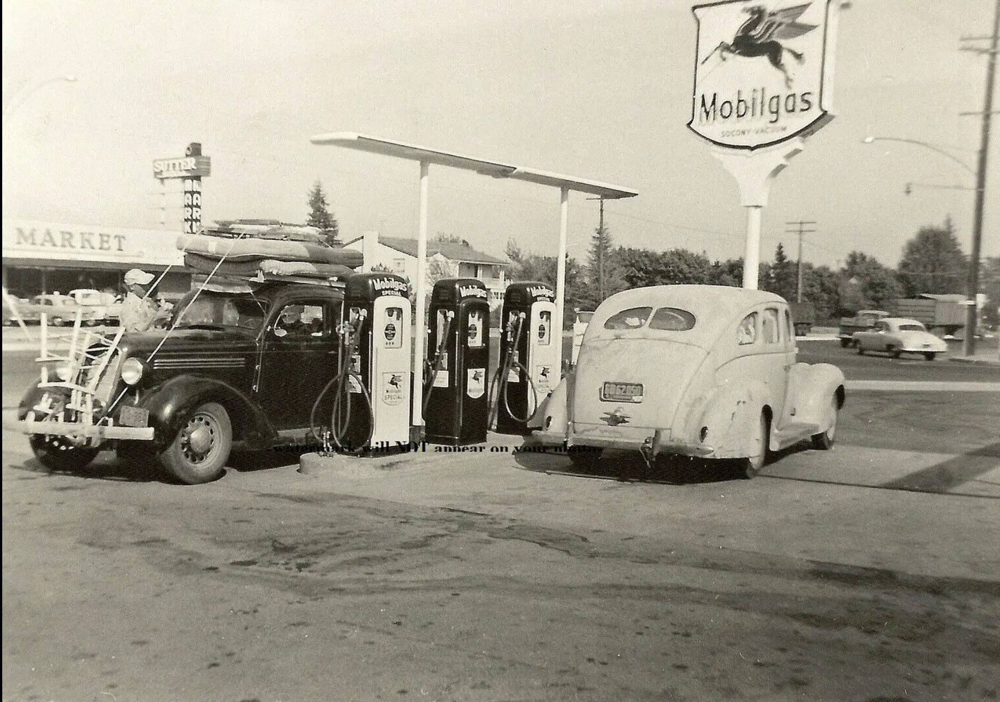

written by Roni Kobrosly on 2023-11-24
My favorite artist is American painter Edward Hopper. There is a beautiful stillness and moodiness in his work that I love. Much of his work touches on the feeling of alienation that comes with living in the modern world. I was recently at the MoMA and had a chance to see a few of his works up close. Not sure why, but I felt inspired to do a bit of a deep-dive into one of them. This is his painting named "Gas", from 1940.
You see a 1940's Mobil gas station that is either in the middle of the woods or maybe on the outskirts of town. It isn't clear if it is dawn or dusk, although it is partly cloudy. The forest is very dense, dark, and impenetrable. It must be the summer because the trees are a deep green while some of the grass is a dry, almost looking like straw. A bare, unmarked, paved road runs alongside the gas station, wide enough or maybe one or two cars at the most. There are no street lights. There is no way to determine where in the country this scene takes place, but given Hopper is from New York state and many of his works depict New York City, maybe this scene takes place in upstate New York. The gas station itself is very small, but well-maintained. There are three red and white gas pumps configured in a line. There also appears to be a rack of canisters between the pumps; perhaps this is motor oil or some other car product. The building itself is a simple and one-room structure, painted a clean white with one entrance and three windows. The lights are clearly on, but we can't make out anything inside the building.

A lone adult man appears to be servicing one of the gas pumps. It's ambiguous whether he owns the gas station, or simply works there, but his formal tie and vest might suggest the former. His expression is blank and his posture relaxed. He looks as though he is performing a routine task he has done many times in the past. Is he cleaning the pump, or repairing some damage, is he basically just biding his time? We have no idea.
I feel a few contradictory emotions from this. First, is the definite loneliness this scene conveys. The cleanliness and the remoteness of the station suggests a visit by a customer is a rare event. How often does this man get human contact in his work day? What does he do between customer visits? How silent is this environment? The man looks resigned to a life of boredom. He looks trapped at this waystation. Second, there is a simplicity to this scene, to this time period, and to this man's profession that I find strangely appealing. Maybe because I spend most of the working day in a very abstract headspace in front of a screen, as a data practitioner in a tech company. Third, there is something menacing about the dark forest background and road that leads into nothingness. The environment starts to look otherworldly and creepy if you stare at it long enough.